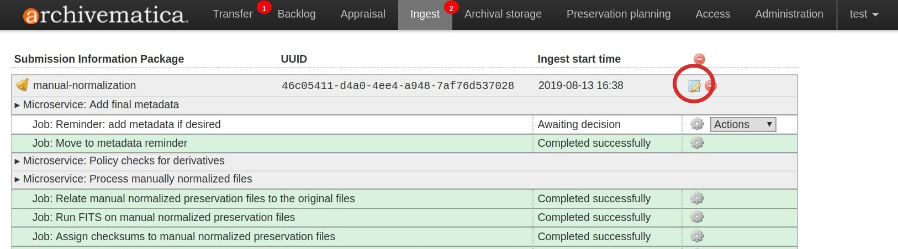
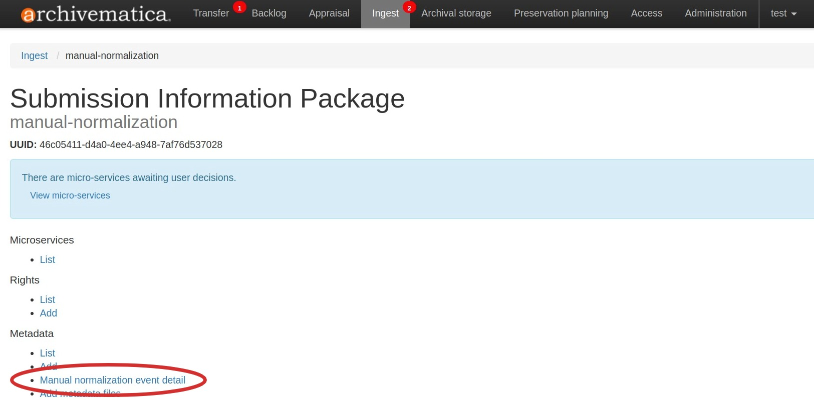
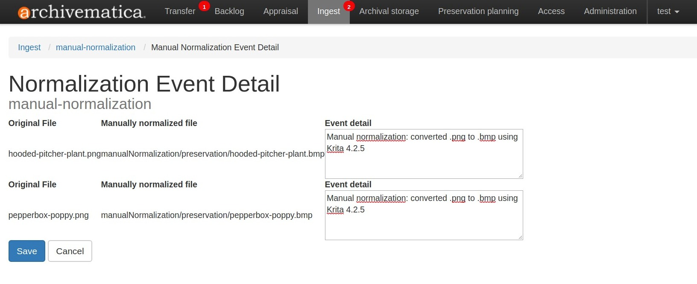

マニュアル正規化¶
正規化とは、アクセスや保存のためにファイルのコピーを作成することです。通常、Archivematica は、[インジェスト] タブの 正規化マイクロサービス 中にこのアクションを実行し、[保存計画] タブの 正規化ルール を適用して アクセスおよび/または保存の派生物を作成します。
ただし、場合によっては、ユーザーが Archivematica の外部でアクセスコピーまたは保存コピーを作成することが合理的である場合があります。たとえば、デジタル化ワークフローの一部として、または Archivematica のツールスイートで正規化できないファイルを操作する場合などです。
"手動正規化" という用語は、Archivematica の2つの異なるワークフローを指すのに使われます：
Archivematica にインジェストする前に、転送に正規化されたファイルを追加
正規化マイクロサービス中にSIPに正規化されたファイルを追加
どちらのオプションでも、ユーザーは手動正規化イベントを記述する PREMIS イベント詳細メタデータを追加できます。
手動で正規化されたデリバティブは、標準転送に追加できます。その他の転送タイプは、サポートされていません。
このページ上
ワークフロー1：Archivematicaに転送する前の手動正規化¶
このワークフローは、素材が Archivematica に転送される前に、ユーザーがファイルのアクセスコピーや保存コピーを作成していることを前提としています。
例えば、デジタル化プロジェクトでは、高解像度のオリジナル（マスター）画像と低解像度のアクセスコピーが作成されることがあります。この正規化作業をArchivematicaが重複して行うことは冗長です。転送処理前に manualNormalization と呼ばれるフォルダを追加することで、Archivematicaは、既に正規化作業が行われたことを認識し、正規化作業を重複させることがなくなります。
注釈
このワークフローでは、オリジナルのオブジェクトとその派生アクセスまたは保存との間に1対1の関係が必要です。単一のオリジナルのオブジェクトに関連する複数のアクセスまたは保存派生物の作成はサポートされていません。
オリジナル（マスター）コピーと手動で正規化した派生ファイルのファイルを作成します。Archivematicaがオリジナルファイルと派生ファイルのリンクを認識するためには、ファイル名が一致している必要があります。
to-be-preserved/ ├── hooded-pitcher-plant.gif ├── hooded-pitcher-plant.png ├── hooded-pitcher-plant.tif ├── ornamental-onion.gif ├── ornamental-onion.png ├── ornamental-onion.tif ├── pepperbox-poppy.gif ├── pepperbox-poppy.png └── pepperbox-poppy.tif
この例では、各ファイルの 3 つのコピー (GIF、PNG、TIFF) があります。PNG ファイルはオリジナル ファイルとして使用され、TIFF ファイルは保存用の派生ファイルとして、GIF ファイルはアクセス用の派生ファイルとして使用されます。
転送ディレクトリを作成し、その中の最上位にオリジナルのファイルを置きます。
my-manually-normalized-material/ ├── hooded-pitcher-plant.png ├── ornamental-onion.png └── pepperbox-poppy.png
manualNormalizationというサブディレクトリを作成します（大文字のNに注意）。manualNormalizationディレクトリ内にaccessとpreservationというディレクトリを作成します (両方は必要ありません。保存コピーしかない場合は、preservationディレクトリのみを作成します。逆も同様です)。手動で正規化したファイルを適切なディレクトリに配列します。my-manually-normalized-material/ ├── manualNormalization │ └── access │ ├── hooded-pitcher-plant.gif │ ├── ornamental-onion.gif │ └── pepperbox-poppy.gif │ └── preservation │ ├── hooded-pitcher-plant.tif │ ├── ornamental-onion.tif │ └── pepperbox-poppy.tif ├── hooded-pitcher-plant.png ├── ornamental-onion.png └── pepperbox-poppy.png
上の例では、GIF アクセス派生物が
manualNormalization/accessディレクトリに移動され、TIFF 保存派生物がmanualNormalization/preservationディレクトリに移動されたことがわかります。Archivematicaがオリジナルファイルとその派生ファイルのリンクを認識するためには、ファイル名が一致している必要があります。
転送を転送元の場所に配列し、通常どおり標準転送を開始します。手順については、 転送r および インジェスト の文書を参照してください。
[インジェスト] タブで正規化マイクロサービスに到達したら、アクセス、保存、またはその両方のために正規化するかどうかを選択します。
注釈
受け入れる前に正規化結果を確認することを選択した場合は、転送のオブジェクトディレクトリに
manualNormalizationフォルダとその内容があり、そのaccessおよび/またはpreservationフォルダとその内容はそのままです。AIP が作成されると、オリジナルとその保存派生物が通常どおり AIP の
dataディレクトリに配列されることがわかります。正規化が完了すると、manualNormalizationディレクトリとサブフォルダーが削除されたことに注意してください。アクセスのために正規化を選択した場合は、DIP も作成されます。
重要
オリジナルとその派生物の間には 1 対 1 の関係がある必要がありますが、すべてのオリジナルが対応する数の派生物を持つ必要はないことに注意してください。次のような構造も同様に機能します：
my-manually-normalized-material/
├── manualNormalization
│ └── access
│ └── pepperbox-poppy.gif
│ └── preservation
│ ├── hooded-pitcher-plant.tif
│ └── pepperbox-poppy.tif
├── hooded-pitcher-plant.png
├── ornamental-onion.png
└── pepperbox-poppy.png
上記のような転送では、Archivematica は選択された正規化オプションに従ってギャップを埋めます。たとえば、ユーザーが "保存のために正規化"を選択した場合、 ornamental-onion.png の保存派生物が Archivematica によって作成されます。
ワークフロー 2：インジェスト中の手動正規化¶
このワークフローでは、Archivematica で処理されている間に、ユーザーがファイルのアクセスコピーや保存コピーを作成することを想定しています。例えば、素材の処理中に、ユーザーは素材を特殊な方法（例えば、独自のツールを使用するなど）で正規化する必要があると判断するかもしれません。
このワークフローでは、ユーザーが Archivematica で転送を開始し、外部正規化ツールを使用して必要な派生物を作成し、ディスク上の現在処理中のディレクトリ内に派生ファイルを手動で配列してから、Archivematica に戻って続ける必要があります。
転送ディレクトリを作成し、その中の最上位にオリジナルのファイルを置きます。
my-manually-normalized-material/ ├── hooded-pitcher-plant.png ├── ornamental-onion.png └── pepperbox-poppy.png
転送を転送元の場所に配列し、通常どおり標準転送を開始します。手順については、 転送r および インジェスト の文書を参照してください。
[インジェスト] タブの正規化マイクロサービスに到達したら、ドロップダウンメニューから 手動で正規化 を選択します。
手動でファイルを正規化します。
SFTP ファイルブラウザーまたは コマンドラインのSSHを使用して、パイプラインの処理場所に移動し、approveNormalization 監視ディレクトリを見つけます。デフォルトの場所は
/var/archivematica/sharedDirectory/watchedDirectories/approveNormalization/preservation/であり、ここに転送ディレクトリが含まれます。パイプラインに定義されている処理場所を確認するには、 ストレージサービス の設定を確認する必要がある場合があります。手動で正規化した派生物を転送ディレクトリにコピーします。
manualNormalizationディレクトリを含むディレクトリ構造を作成する必要があります。manualNormalizationディレクトリ内にaccessとpreservationというディレクトリを作成します (両方は必要ありません。保存コピーしかない場合は、preservationディレクトリのみを作成します。逆も同様です)。手動で正規化したファイルを適切なディレクトリに配列します。my-manually-normalized-material/ ├── manualNormalization │ └── access │ └── pepperbox-poppy.gif │ └── preservation │ ├── hooded-pitcher-plant.tif │ └── pepperbox-poppy.tif ├── hooded-pitcher-plant.png ├── ornamental-onion.png └── pepperbox-poppy.png
上記の例では、
pepperbox-poppy.pngには保存用とアクセス用の派生物が作成されましたが、hooded-pitcher-plant.pngには保存用コピーのみが作成されました。Archivematicaがオリジナルファイルとその派生ファイルのリンクを認識するためには、ファイル名が一致している必要があります。
ダッシュボードに戻り、正規化を承認します。
AIP が作成されると、オリジナルとその保存派生物が通常どおり AIP の
dataディレクトリに配列されることがわかります。正規化が完了すると、manualNormalizationディレクトリとサブフォルダーが削除されたことに注意してください。アクセスコピーを持っていた場合、DIP も作成されます。
手動正規化のためのPREMIS eventDetailの追加¶
Archivematicaが正規化を実行すると、PREMISイベントが作成され、正規化イベントを記述するMETSに追加されます。しかし、手動で素材を正規化した場合、ArchivematicaはPREMISイベントを作成しません。この機能により、手動で正規化した素材に対してPREMISイベントを記述できます。
手動で正規化したファイルを最初の転送（ワークフロー1）に含めるか、処理中（ワークフロー2）に含めるかにかかわらず、PREMIS eventDetailを追加する手順は同じです。
注釈
手動正規化 PREMIS イベントを追加する場合は、 処理設定 で "リマインダー：必要に応じてメタデータを追加" を なし に設定し、好機を逃さないようにすると便利です。SIP がこのマイクロサービスを通過すると、PREMIS イベントを追加できなくなります。
上記のワークフロー1または2の手順に従ってください。
正規化が承認されると、Archivematicaは停止し、メタデータを追加するよう促します。メタデータのアイコンをクリックしてください。

メタデータの下にある"手動正規化イベントの詳細" を選択します。

イベントの詳細を追加します。これは、
program=ImageMagick; version=6.6.4.0; command=%convertPath% %fileFullName% +compress %preservationFileDirectory%%fileTitle%.%preservationFormat%のような技術的なツールの出力かもしれないし、または下の例のようなもっと説明的なものかもしれません。
メタデータを保存し、インジェストタブをクリックして処理を続行します。
処理を続けるには、メタデータリマインダーのドロップダウンボックスから [続ける] を選択します。
{kind=link}
{kind=link}
{kind=link}
同じ名前のファイルの正規化¶
The manual normalization workflow outlined above assumes that there are no
conflicts between filenames. For example, if the original filenames are
file1.doc and file2.xls, there is no conflict. But if you are manually
normalizing both file1.doc and file1.xls, even if the extensions of the
normalized files are different, you will need to provide a CSV file to document
the relationships between the original and normalized files.
ディレクトリ構造を作成します。
manually-normalized-duplicate-names/ ├── manualNormalization │ └── access │ ├── file1.jpg │ └── file1.pdf │ └── preservation │ ├── file1.pdf │ └── file1.tif ├── file1.crw ├── file1.doc └── file1.tga
上記の例では、
file1.tgaには JPG アクセス派生物と TIFF 保存派生があります。file1.docには PDF へのアクセスと保存派生物があります。file1.crwには派生物がありません。normalization.csvという名前の CSV ファイルを作成します。CSV には、オリジナルのファイルのパス、アクセス派生物のパス、保存派生物のパスの 3 つの列が必要です。手動で正規化された派生物がない場合でも、重複する名前を持つすべてのファイルをリストアップする必要があります。file1.tga
manualNormalization/access/file1.jpg
manualNormalization/preservation/file1.tif
file1.doc
manualNormalization/access/file1.pdf
manualNormalization/preservation/sfile1.pdf
file1.crw
重要
normalization.csvは大文字と小文字を区別します。ファイルパスが正確であることを確認してください。列ヘッダーは含めないでください。CSVファイルを転送の最上位に含めます。
manually-normalized-duplicate-names/ ├── manualNormalization │ └── access │ ├── file1.jpg │ └── file1.pdf │ └── preservation │ ├── file1.pdf │ └── file1.tif ├── file1.crw ├── file1.doc ├── file1.tga └── normalization.csv
上記のワークフロー1または2に従って転送します。
上記の例では、保存とアクセスの両方に対して手動で正規化されたファイルがありますが、該当する列を空白にすることで、アクセスまたは保存のみに対して手動で正規化されたファイルを持つことも可能です。
他のシナリオも可能です：
オリジナルのファイルはサブディレクトリにはありませんが、正規化されたコピーはサブディレクトリにあります：
file1.tga,manualNormalization/access/subdir1/file1.jpg,manualNormalization/preservation/subdir1/file1.tif
file1.doc,manualNormalization/access/subdir1/file1.pdf,manualNormalization/preservation/subdir1/file1.pdf
サブディレクトリ内の一部の正規化されたコピーのみ：
file1.tga,manualNormalization/access/subdir1/file1.jpg,manualNormalization/preservation/subdir1/file1.tif
file1.doc,manualNormalization/access/file1.pdf,manualNormalization/preservation/subdir1/file1.pdf
ファイル名を区別するためだけに使用されるサブディレクトリ：
file1.tga,manualNormalization/access/subdir1/file1.jpg,manualNormalization/preservation/subdir1/file1.tif
file1.ppm,manualNormalization/access/subdir2/file1.jpg,manualNormalization/preservation/subdir2/file1.tif
注釈
ファイル名に Archivematica のツールセットが処理できない文字が含まれている場合、Archivematica はその文字を最も近い同等の文字に置き換えてファイル名を変更します (詳細については、 ファイル名の変更 を参照してください)。Normalization.csv ファイルは、オリジナルのファイル名または変更されたファイル名のいずれでも機能します。